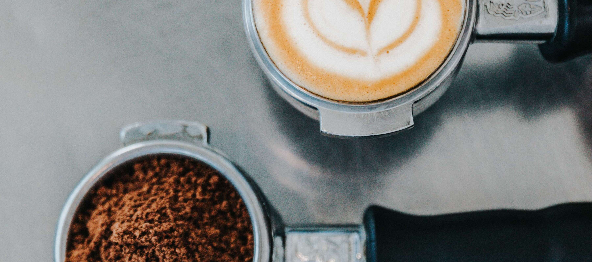

TOINIOT² Blog
ブログ始めました。(2回目)
今回の記事は、ブログ更新が遅れたことのお詫び、現時点でのTOINIOT²の方針、そして技術的な進捗についてです。暇なときに読んでください。そんなに重要なことは書いていないです。本当に。
2023-07-09 Writer: トキ
初めまして! こんにちは!
今日ようやくブログリニューアルから第1回目の記事を投稿することができました。
今回は伝えたいことが多いので早速。
まず、今までブログ更新が遅れていたことについてのお詫びです。
ブログ更新が遅れたこと、誠に申し訳ございませんでした。
まさか最後の記事投稿から4か月経っても更新されないとは... こんなに筆の歩みが遅いブロガーは初めて見ました。（はい、当事者です。すみません）
このままだと次に更新されるのは来年になりかねないので、ブログ更新を1か月に1回程度で定期的に行うように心がけたいと思います。
さて、次は我々TOINIOT²のチームの方針です。
ロボット制作についての方針は、大きく分けて2つあります。
まず1つ目の方針は、メンテナンスのしやすいロボットを作ることです。
ロボットはちょっとしたことでもパフォーマンスが落ちるので、マメなメンテナンスが必要になります。（私たちのロボットの場合です。めちゃ"つよつよ"な方々はこの限りではないかもです。）
そして、もし誤作動を起こした場合、迅速にその原因を突き止めなければならないので、メンテナンス性は高ければ高いほどいいと思います、よね?
2つ目の目標は、"つよつよ"のプログラムを書くということです。
どれだけ質の高い機体を制作したとしても、プログラムの質が低ければまともに動くことはないでしょう。
逆に言えば、多少機体の性能が劣っていたとしても、プログラムの面で勝っていれば思い通りの動作をしてくれて、試合に勝つことも可能になるのではないでしょうか。
以上の2つが、現在（2023.07.10.16:11）のチームの方針です。
最後に、現状のチーム内の技術的進捗です。
今年度のロボット制作では、これまで使ったことのない新たな技術を積極的に取り入れ、実用化に取り組んでいます。
私たちは、学校で（しかも中高一貫校で）部活として活動しているので、当然部の中には後輩というものが存在します。

今の世代が競技を引退した後のことも考えながら、次世代への技術継承という面でも、新たな技術への進出は大きな価値を持っていると考えています。
（こんな真面目な感じに書いていますが、実際かなりコワイです。ハイ、ホントウニコワイデス。）
今回の記事は、これで終わりです。上でも書いた通り、これからは月に1回程度で更新（を目指）していくので、暇なときに見に来てください!
また次の記事でお会いできることを楽しみにしています。